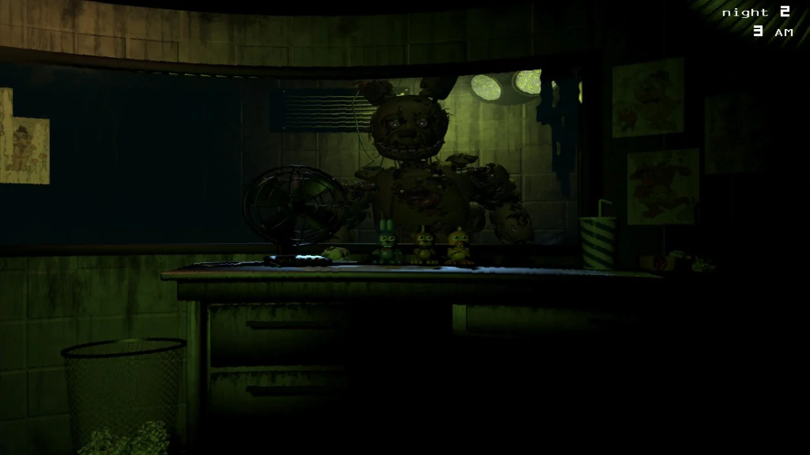
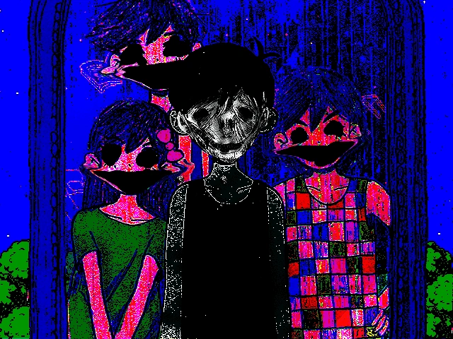

horror games are one of the more popular games in modern society.
five nights at freddy's, phasmophobia, the mortuary assistant, to name a few.
WHY ARE HORROR GAMES SO SCARY?
VISUAL
The blank space below is a flashlight simulation. Move your cursor around it. It is recommended keep window zoom at 100% during this experience.

*Five Nights at Freddy's 3 game.
Many horror games love to use darkness.
This takes advantage of our evolutionary fear of darkness.
Would you have noticed the paper bin on the bottom left corner?
Horror games like to make use of uncanny visuals to add to the unsettling feeling
WARNING: image could be triggering. click to image to unblur/blur it.

*Omori mirror easter egg
AUDIO
Audio is one of the most important aspects that make a horror game.
It enhances the experience and makes the game more immersive.
*an audio sample of Five Nights at Freddy's 2 ambience.
And when it's time for a jumpscare,
a sudden and eerie sound plays to breathe life into the jumpscare
*an audio sample of Five Nights at Freddy's: Sister Location Jumpscare.